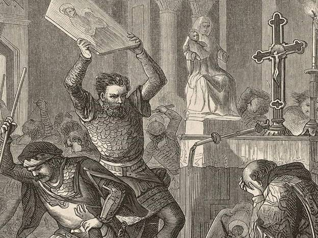
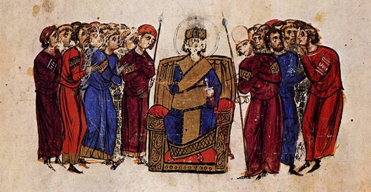

Способствовал возрождению иконоборчества. И частично из-за этого произошло восстание, значит народ не очень доверял ему. Но Лев V Армянин одержал победу над болгарами и заключил с ними 30-летний мир. И это весьма важно. Но в 820-ом году он был убит заговорщиками. Так что наша газета считает, что Лев V Армянин был хорошим полководцем, но не правителем. Правитель это в первую очередь тот, кто прислушивается к мнению народа. Он же этого не делал и поплатился жизнью
